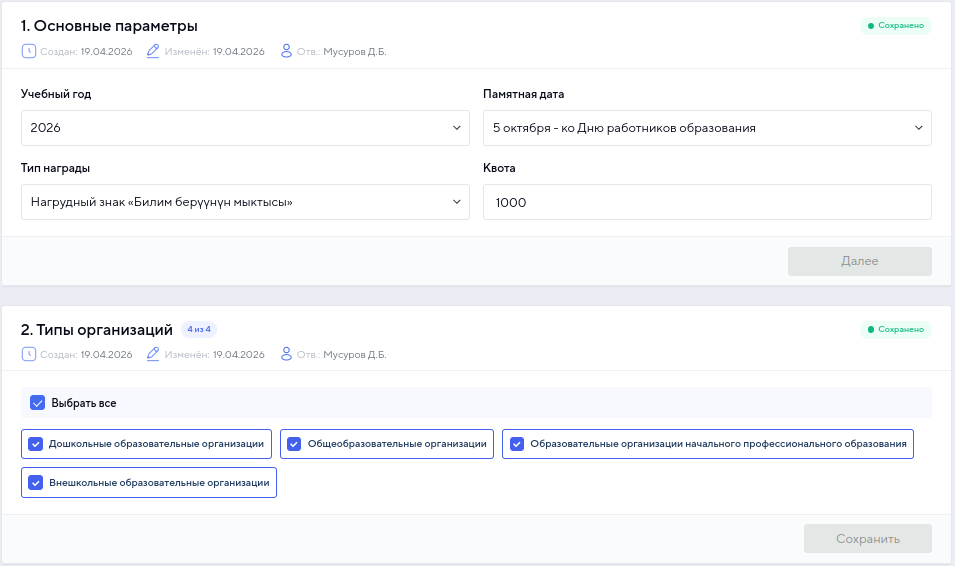
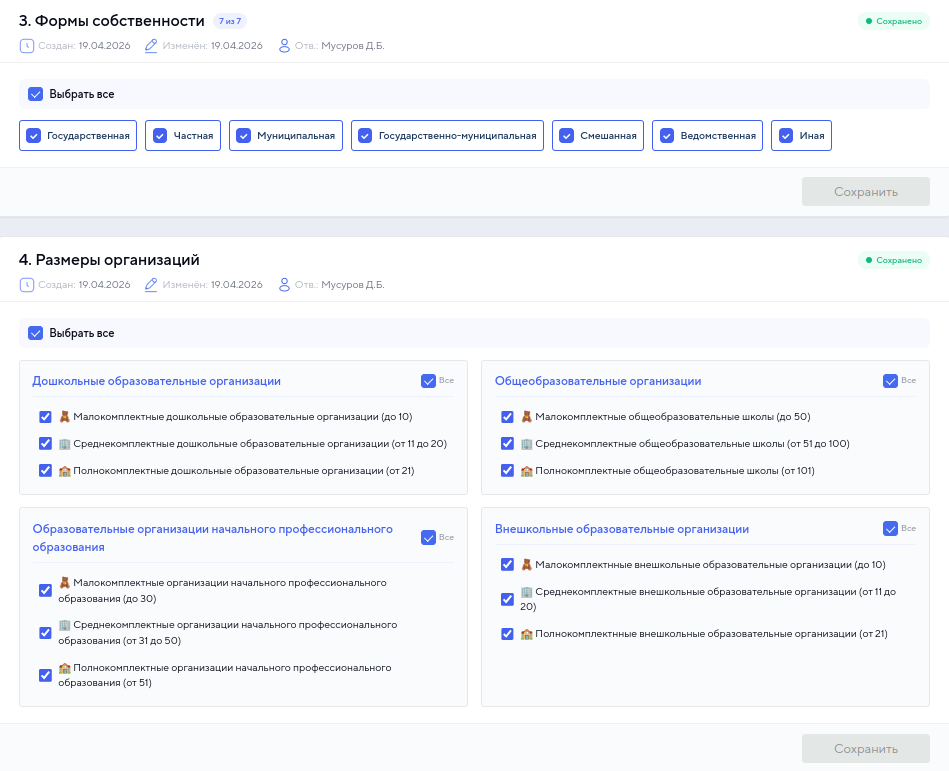
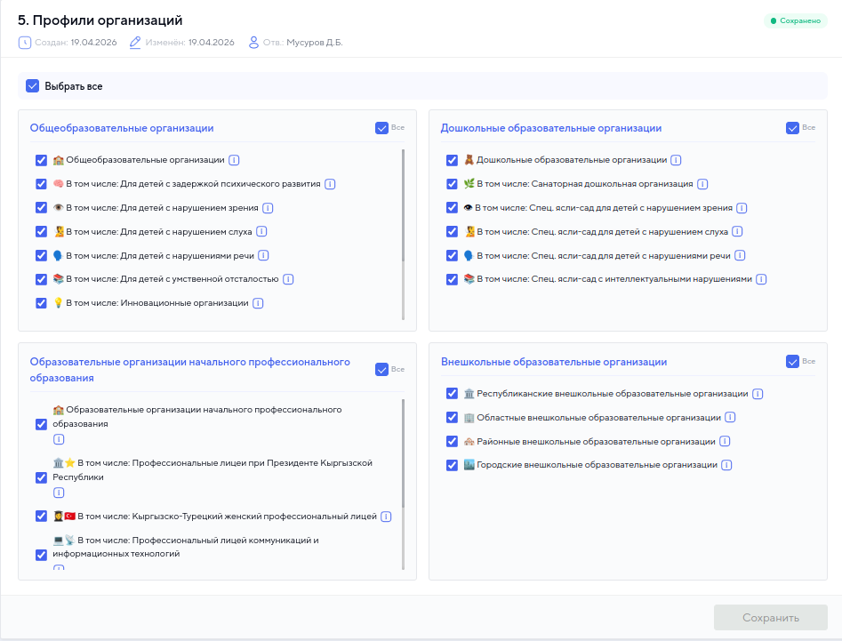
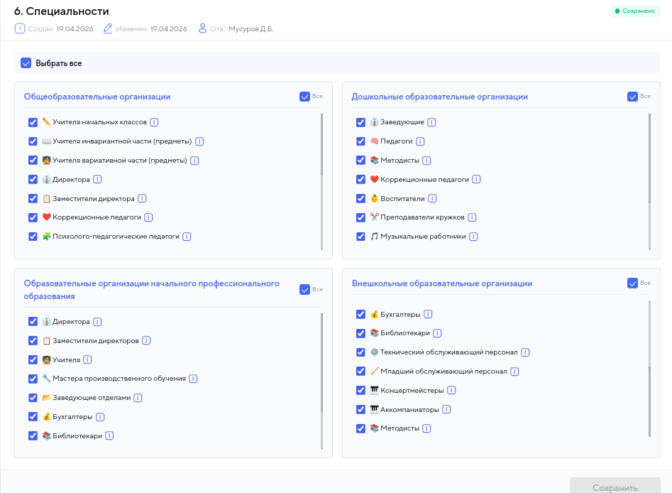
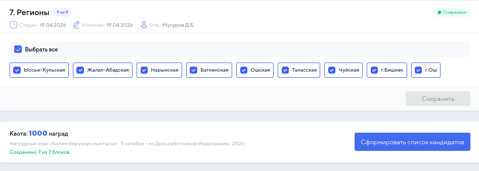

Министерство просвещения Кыргызской Республики
Почётная грамота • Нагрудный знак «Билим берүүнүн мыктысы»
2026
Обзор
За значительный вклад в развитие образования
«Билим берүүнүн мыктысы»
Ранжирование по баллам, стажу и квотам
Каждая грамота с уникальным QR-кодом
Шаг 1
Главный экран — перечень всех созданных и утверждённых заявок. Служит архивом: кто, когда, какую награду и сколько выдавали.
| № | Год | Памятная дата | Тип награды | Квота | Ответственный | Утверждено | |
|---|---|---|---|---|---|---|---|
| 1 | 2026 | 25 мая — ко Дню последнего звонка | Почётная грамота Создана: 15.04.2026 | 35 | Асанов А.К. | ✓ | 👁 |
| 2 | 2026 | 25 мая — ко Дню последнего звонка | Почётная грамота Создана: 17.04.2026 | 100 | Бекова Н.Т. | ✓ | 👁 |
| 3 | 2026 | 5 октября — ко Дню работников образования | Почётная грамота Создана: 18.04.2026 | 500 | Бекова Н.Т. | ✓ | 👁 |
| 4 | 2026 | 5 октября — ко Дню работников образования | Нагрудный знак Создана: 19.04.2026 | 1000 | Бекова Н.Т. | ◯ | 👁 |
Полная история всех награждений: когда создана, кем, тип, квота, статус утверждения
Шаг 2
Заполняем основные параметры награждения

Шаг 3
Последовательная настройка каждого блока фильтрации
Год, дата, тип, квота
Дошкольные, общеобразовательные, НПО, внешкольные
7 форм: государственная, частная, муниципальная и др.
Мало-, средне-, полнокомплектные
Специализированные школы, лицеи, профильные
Учителя, директора, методисты, воспитатели
9 регионов: 7 областей + г.Бишкек + г.Ош
Критерий 1 из 7
Задаём базовые параметры заявки: учебный год, памятную дату, тип награды и общую квоту на количество наград
Критерий 2 из 7
Выбираем из каких типов образовательных организаций отбираются кандидаты
Критерий 3 из 7
Фильтрация по форме собственности организации

Критерий 4 из 7
Классификация по количеству учащихся / воспитанников
Размеры определяются отдельно для каждого типа: дошкольные, общеобразовательные, НПО, внешкольные
Критерий 5 из 7
Включение специализированных и профильных учреждений

Критерий 6 из 7
Выбор должностей и специализаций педагогических работников

Критерий 7 из 7
Выбор регионов для формирования квот. Квоты распределяются пропорционально количеству педагогов

Конкуренция
Чем больше кандидатов на 1 место — тем выше конкуренция
Итого: 1 000 наград • 64 117 кандидатов • в среднем 128 чел. на 1 место
Требования к награждению
Каждый тип награды имеет свои минимальные требования по стажу и предыдущим наградам
Система рейтинга
Для педагогов общеобразовательных организаций. Баллы от 1 до 5 за каждый критерий.
| № | Критерий | Баллы |
|---|---|---|
| 1 | Повышение квалификации (≥72 часа за 5 лет), сертификат РИПКППР / гос. вуза | 5 за 1-й серт., 1 за каждый след. |
| 2 | Победитель областной предметной олимпиады (учащийся) | 1 место — 3, 2 место — 2, 3 место — 1 |
| Победитель республиканской предметной олимпиады | 1 место — 5, 2 место — 4, 3 место — 3 | |
| 3 | Победитель конкурса «Учитель года» | Обл: 3/2/1 • Респ: 5/4/3 |
| 4 | Авторская программа (утв. приказом Министерства) | 3 балла |
| 5 | Разработка методических программ / предметного стандарта / учебной программы / методического пособия | по 3 балла за каждый |
| 6 | Эксперт «Окуу китеби» | 3 балла |
| 7 | Учёная степень | Магистр — 3, канд. наук — 4, доктор — 5 |
| 8 | Руководитель методического объединения | 3 балла |
Аналогичные критерии применяются для педагогов 1–4 классов и специализированных образовательных организаций
Система рейтинга
Для каждого типа организации — свои критерии с учётом специфики
Отбор осуществляется АИС на основе рейтинга по суммарному количеству баллов. Отдельные категории: малокомплектные школы (<100 учащихся) и спец. организации (школы-интернаты).
Как формируется рейтинг
Система автоматически суммирует баллы из всех источников данных
| Критерий | Баллы |
|---|---|
| Повышение квалификации (2 сертификата: 1-й = 5, 2-й = 1) | 6 |
| Победитель областной олимпиады (учащийся), 2 место | 2 |
| Конкурс «Учитель года» — областной, 1 место | 3 |
| Методическое пособие | 3 |
| Магистр | 3 |
| ИТОГО | 17 |
Место среди всех кандидатов страны по сумме баллов
Место внутри своего региона — определяет попадание в квоту
Малокомплектные школы и школы-интернаты ранжируются отдельно
Шаг 4
После нажатия «Сформировать список кандидатов» — система выдаёт ранжированный список по регионам
| № | ФИО | Регион | Стаж | Баллы | Ранг по республике | Ранг в регионе |
|---|---|---|---|---|---|---|
| 1 | Жумабаев Алмаз Бакирович 1983-04-17 • +996 555 123456 | Ыссык-Кульская | 9 лет 0 мес | 16 | 8 | 2 |
| 2 | Токтогулова Айгуль Маратовна 1974-02-05 • +996 704 234567 | Ыссык-Кульская | 13 лет 4 мес | 16 | 7 | 1 |
| 3 | Сыдыкова Гульмира Абдыкадыровна 1966-12-16 • +996 709 345678 | Ыссык-Кульская | 33 года 6 мес | 13 | 14 | 4 |
| 4 | Орозбекова Назира Жумабаевна 1967-06-15 • +996 555 456789 | Ыссык-Кульская | 37 лет 0 мес | 13 | 12 | 3 |
| 5 | Эсенбаева Бурул Кенешовна 1982-12-11 • +996 705 567890 | Ыссык-Кульская | 21 год 1 мес | 11 | 24 | 5 |
Рассчитываются автоматически
Общий рейтинг
Позиция внутри региона
Шаг 5
Комиссия видит только текущий утверждённый список по квоте региона. Может утвердить или отклонить каждого кандидата.
Это ключевой принцип: члены комиссии не имеют доступа к резервному списку. Они не знают, кто займёт место отклонённого кандидата. Это исключает предвзятость и обеспечивает объективность решений.
| № | ФИО | Стаж | Баллы | Статус | Действие |
|---|---|---|---|---|---|
| 1 | Жумабаев А.Б. | 9 лет | 16 | Рассмотрение | ✓ ✗ |
| 2 | Токтогулова А.М. | 13 лет | 16 | Рассмотрение | ✓ ✗ |
| 3 | Сыдыкова Г.А. | 33 года | 13 | Утверждён | ✓ |
| 4 | Орозбекова Н.Ж. | 37 лет | 13 | Утверждён | ✓ |
| 5 | Эсенбаева Б.К. | 21 год | 11 | Рассмотрение | ✓ ✗ |
Резервный список скрыт от комиссии
Шаг 5.1
При отклонении — система автоматически подставляет следующего по ранжиру в регионе
Указывается причина: несоответствие, нарушения и т.д.
Система находит следующего по ранжиру в том же регионе
Количество наград для региона не меняется
Процесс повторяется до исчерпания кандидатов
Решение об отклонении принимается объективно, без знания о том, кто следующий
Следующий по ранжиру в том же регионе занимает место без участия комиссии в выборе
Интерактивная демонстрация
| № | ФИО | Баллы | Ранг | Статус | Действие |
|---|
Шаг 6
После рассмотрения всех кандидатов комиссия утверждает окончательный список
| Регион | Квота | Утверждено | Отклонено | Заменено | Статус |
|---|---|---|---|---|---|
| Ыссык-Кульская | 40 | 40 | 3 | 3 | Готов |
| Баткенская | 51 | 51 | 1 | 1 | Готов |
| Ошская | 104 | 104 | 5 | 5 | Готов |
| Жалал-Абадская | 98 | 98 | 2 | 2 | Готов |
| ... ещё 5 регионов ... | |||||
Шаг 7
После утверждения списка — автоматическое формирование приказа, запись в БД, генерация дизайна с QR
Становится доступна после утверждения списка комиссией
Приказ генерируется с номером, датой и полным списком награждённых
Утверждённый список фиксируется в БД — данные доступны в архиве
Автоматически формируется дизайн грамоты/знака с уникальным QR-кодом для проверки подлинности
QR-код ведёт на страницу верификации подлинности награды
Архив
Все созданные и утверждённые заявки сохраняются в системе. Полная история: кто, когда, какой тип награды, сколько выдано, на основании какого приказа.
| Год | Памятная дата | Тип награды | Квота | Выдано | Приказ | Ответственный | Статус |
|---|---|---|---|---|---|---|---|
| 2024 | 5 октября | Почётная грамота | 300 | 300 | № 89 от 01.10.2024 | Асанов А.К. | Завершено |
| 2024 | 25 мая | Нагрудный знак | 150 | 150 | № 54 от 20.05.2024 | Бекова Н.Т. | Завершено |
| 2025 | 5 октября | Почётная грамота | 500 | 500 | № 102 от 30.09.2025 | Бекова Н.Т. | Завершено |
| 2025 | 25 мая | Нагрудный знак | 200 | 200 | № 61 от 19.05.2025 | Асанов А.К. | Завершено |
| 2026 | 25 мая | Почётная грамота | 35 | 35 | № 45 от 20.05.2026 | Асанов А.К. | Завершено |
| 2026 | 5 октября | Нагрудный знак | 1000 | - | - | Бекова Н.Т. | В работе |
Ключевое преимущество
Система спроектирована не для нескольких фиксированных сценариев, а как универсальный инструмент с гибкой настройкой по всем параметрам
Не ограничиваясь 1-2 критериями — система позволяет комбинировать все 7 уровней для точного подбора кандидатов под любой тип награждения
Каждый критерий можно включить/выключить: от всех типов организаций до конкретной специальности в одном регионе
Можно наградить только учителей начальных классов из малокомплектных школ Нарынской области — или всех педагогов всех типов
Комиссия не видит кто следующий по списку — решения принимаются объективно, без возможности предвзятого выбора
Баллы, стаж, ранг по республике и региону рассчитываются автоматически — исключён человеческий фактор
Вся история награждений: кто, когда, какую награду, сколько выдано, на основании какого приказа — всё в одной системе
Итого